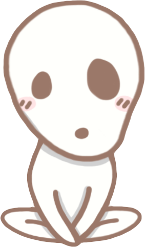

Tooltips for D3 Data Visualizations.
Kodama is a D3-based tooltip system designed to be simple, fast and small with a fluent API. Tooltips are evaluated in a lazy fashion, allowing thousands to potentially coexist (virtually) in the same context without suffering a performance hit. It can be styled without CSS classes (which I view as terribly heretical global variables for any large, modular application). And it can support a preferred directional 'gravity' that will adjust itself so as to stay on the screen.
It can be used across an entire site for consistency, but integrates canonically with D3's API. If using jQuery in addition to D3, you can include a tiny plugin to add tooltips to any jQuery selection.
Full API documentation can be found at the GitHub page.